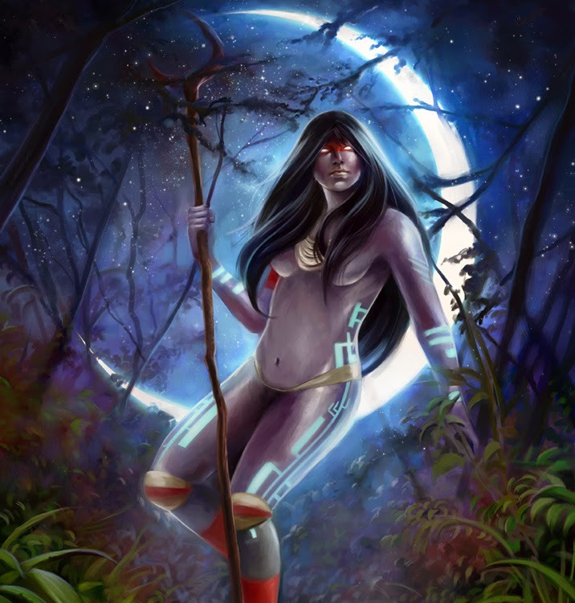

Se não for muito incômodo, você poderia fazer o que estar pedindo abaixo? :)
Prazer em lhe conhecer, (nome) <3
Parágrafo introdutório
A palavra vem do grego helenístico “cosmos”(σύμπαν), que significa mundo, e “gonia”(αγωνία), que significa criação, ou simplesmente gênese.
Pelo simples fato de nós, seres humanos, sermos seres racionais e possuidores da consciência, nos destacamos pelas nossas formas de expressar e por questionamentos inquietantes. Sendo estes questionamentos serem relacionados a “como chegamos até aqui?”. Por conta dessa intensa necessidade de compreender o que exatamente é o imenso cosmos e porquê ele existe. Cada cultura se encarregou de contar histórias mitológicas a fim de explicar o surgimento de astros e do próprio universo. Essas histórias são as narrativas cosmogônicas.
O que são narrativas cosmogônicas?
Como explicado anteriormente, a humanidade inventava histórias que pudessem explicar fenômenos naturais e o próprio surgimento do universo. Isso são as narrativas cosmogônicas. Mas as narrativas cosmogônicas são muito mais do que hipóteses feitas por povos que tentavam explicar eventos naturais e o surgimento de tudo, eles também buscavam explicar grandes questões filosóficas e sociais complexas como guerra, justiça, amor e muito mais. Dentre essas narrativas, pode-se destacar o Mito, uma explicação fantástica que os personagens costumam ser deuses, semideuses ou entidades sobrenaturais.
Por exemplo, o mito da caixa de Pandora ou o mito de Prometheus
Pandora segurando a caixa que tinha todos os males do mundoPrometheus trazendo o fogo para a humanidade
Mitologias
A palavra “Mitologia” vem do grego “mito”(μύθος) e “logia”(βαρύς), que significam respectivamente, narrar, contar e estudo.
Mitologia é nome dado à área do conhecimento que estuda os mitos, mas também ao conjunto de crenças de um povo. As mitologias mais famosas são as mitologias grega, a romana e nórdica, as outras já não são tão conhecidas, é a egípcia, a japonesa e a brasileira.
Principais histórias
Origem do mundo na mitologia grega
No início, o mundo foi feito pelo Caos (o deus primordial). Era um âmbito de caos, trevas, um completo vazio, então ele decidiu criar Gaia, a Mãe Terra, Eros (deus do amor e do erotismo), Nix (personificação da noite) e Tártaro (personificação do mundo inferior).
CaosGaia
Gaia cria Urano (personificação do céu). Urano, que se casou com sua mãe, teve 18 filhos, incluindo titãs, ciclopes e hecatônquiros (deuses gigantes que possuíam 100 braços e 50 cabeças). Urano, sabendo que seus filhos eram todos demasiados fortes e poderosíssimos, temia que tomassem seu poder. Por isso, ele prendeu seus próprios filhos em torno do ventre de Gaia, que sofria muitas dores, mas que ainda assim não podia libertá-los pois antes seria necessário confrontar e derrotar contra Urano. Então, ela fez seu filho mais novo, Chronos (deus do tempo), lutar contra seu pai. Que mais tarde obteve triunfo, após cortar os testículos de seu pai, o deixando sem poder e incapaz de revidar.
Urano sendo castrado por seu filho Cronos
O sangue de Urano derramou e criou suas 3 filhas: as Erínias. E são Tisífone a personificação da vingança, Megera, personificação do rancor e Alecto, o ódio.
As 3 EríniasAs 3 Erínias
Cronos, que agora possui o poder de seu pai, também temia do mesmo medo de seu pai: perder o trono. Ainda assim, o deus do tempo se casou com uma de suas irmãs, Reia (titânide). Mas sempre que Reia dava luz a uma criança, Cronos do devorava para evitar futuros prejuízos. Porém, sua mãe não se conformava pelo esquecimento dele por ela, o que não só lhe fazia sofrer, mas também foi por isso ela planejou uma vingança. Reia, que já estava farta de tanta dor e sofrimento pela perda de tantos filhos, decidiu que ia salvar pelo menos um. E, com o auxílio de seus tios, titãs, ciclopesdoshecatônquiroso Zeus trovão) derrotou Cronos, uma batalha que durou 10 anos, que não só terminou com a perda de seu trono, mas também vomitando seus irmãos. Mais tarde Zeus equilibrou os poderes dividindo-os.
Cronos indo comer algum de seus filhos
Origem do mundo na mitologia guarani
Dentre os vários nomes que contam ser do deus da criação, o mais conhecido é Tupã (o senhor do trovão). Tupã, que com a ajuda da deusa da Lua (Jaci), desceu à Terra num monte, em Areguá (Paraguai) e deste lugar, criou a natureza na Terra, basicamente. Ele criou os oceanos, as florestas e os animais. Ele também posicionou as estrelas no céu. Depois desse processo, ele criou a humanidade em uma cerimônia feita, com várias estátuas de argila de homens e mulheres. Após essa cerimônia, deu o sopro de vida e os deixou com os espíritos do bem e do mal, e partiu.
Tupã

Jaci
Outro nome que ele também é muito conhecido é Ñane Ramõi Jusu Papa, que significa “Nosso Grande Avô Eterno”.
Na segunda versão, o deus teria criado a sua esposa Ñande Jari (também conhecida como "Nossa Avó") do seu diadema, mas teria brigado logo com ela enquanto ameaçava destruir o mundo. Mas ele só não destruiu o mundo porque foi contido cântico sagrado de sua esposa, intensificado pelo takuapu.
Takuapu (seu tamanho é varia de acordo para qual mulher é feito)